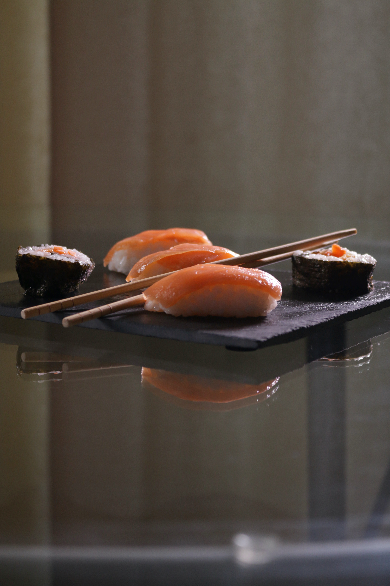
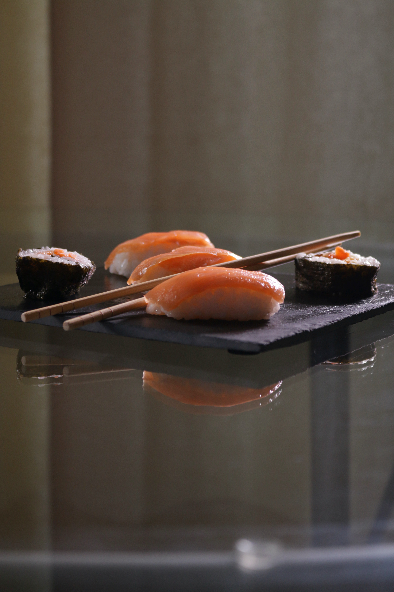

Oshi Sushi is a recipe cooked on the expert Sushi Master Station. It requires five Salmon, four Sushi Roll and 1 Soy Sauce and takes 12 hours to cook.
The conelike form of temaki incorporates rice, specially prepared seaweed called nori, and a variety of fillings known as neta.
Nigiri sushi is that familiar style of sushi made up of an oval-shaped mound of rice with a slice of (usually) raw fish on top.
It's a type of small cylindrical sushi with nori on the outside. They generally contain only one filling, often tuna, cucumber, kanpyō, nattō, umeboshi paste, and squid with shiso.
“People judge things by their own experience, not knowing of the wide world outside.”

 


“People judge things by their own experience, not knowing of the wide world outside.”